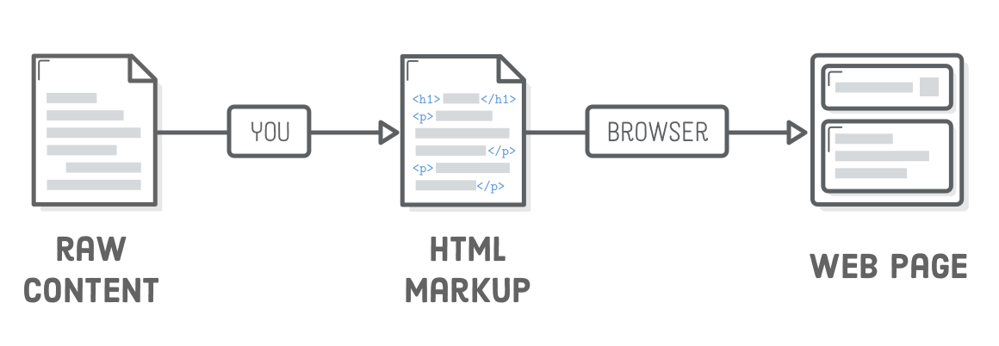
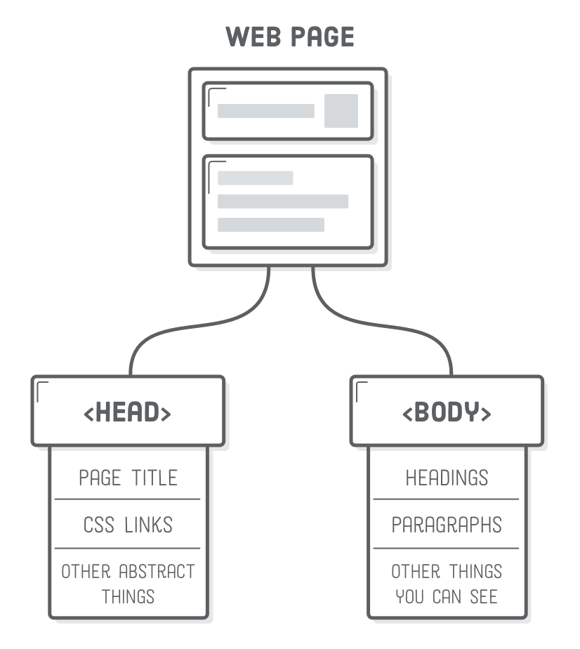
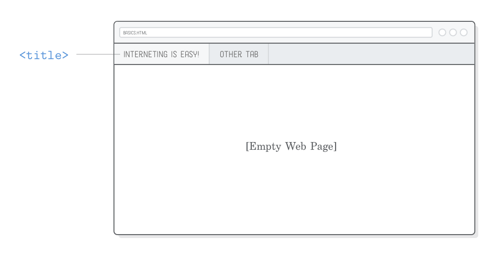
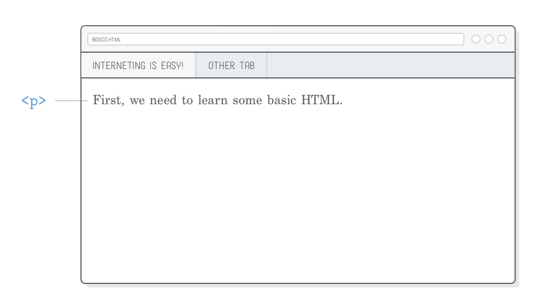
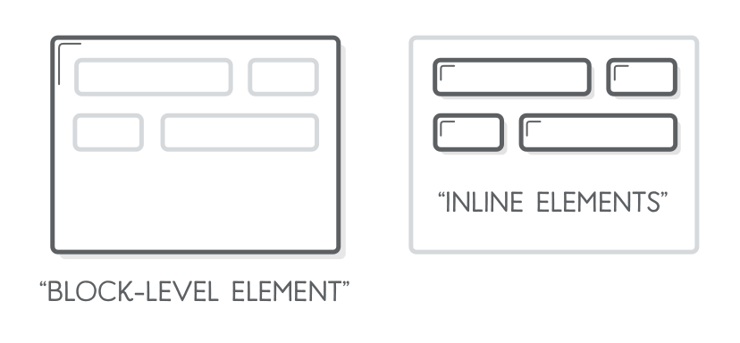
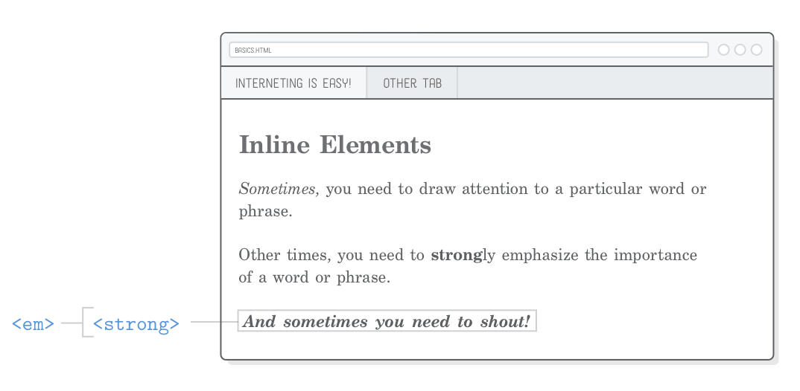

Um tutorial amigável para fazer páginas web (realmente) básicas
A HTML define o conteúdo de todas as páginas web na Internet. Ao
“marcar” seu conteúdo bruto com etiquetas HTML, você conseguirá dizer
para os navegadores como você quer mostrar diferentes partes do
seu conteúdo. Criar um documento HTML marcando de forma correta
o conteúdo é o primeiro passo para desenvolver páginas web.

Nesse capítulo, vamos contruir nossa primeira página web. Vai
parecer um esqueleto por que não tem qualquer CSS definindo o estilo,
mas irá servir como uma introdução completa aos elementos da HTML que os
desenvolvedores web trabalham com o básico do dia a dia.
Assim que você vai trabalhando com os exemplos, tente uma abordá-los
mais como uma versão prática de um editor WYSIWYG como o Google Docs
ou o Microsoft Word. Vamos trabalhar com os mesmos tipos de conteúdo
(cabeçalhos, parágrafos, listas, etc), definindo de uma forma um pouco
mais explícita com a HTML.
Configuração
Vamos começar criando um novo projeto no Atom chamado
basic-web-pages. Depois, crie um novo arquivo chamado
basics.html nessa pasta. Esse arquivo HTML representa
uma página web, e é onde vamos colocar todos os nossos códigos desse
capítulo. Se você ainda não configurou o Atom, dá uma olhada na
Introdução dessa série de
tutoriais.
Lembre que o fluxo básico de trabalho para desenvolvedores web é
editar a HTML nos seus editores de texto e ver as mudanças em um
navegador web, então isso é exatamente o que você deve fazer para
cada seção desse capítulo.
Estrutura de uma Página Web
Adicione a marcação HTML abaixo ao nosso arquivo basics.html.
É assim que você vai começar toda página web que você produzirá.
Tipicamente, você vai usar um modelo de algum tipo para evitar
ficar reescrevendo as partes redundantes, mas para esse tutorial,
vamos focar na HTML pura.
Primeiro, precisamos dizer para o navegador que essa é uma página
HTML5 com o linha de código <!DOCTYPE html>.
Isso é uma linha especial que o navegador vai olhar toda vez
que ele for acessar nossa página web, e ela deve ser sempre como
está indicada acima, sempre no início do documento HTML, escrita
daquela forma.
E então, toda nossa página precisa ser embrulhada com a etiqueta
<html>. O seguinte texto <html>
é chamado de “etiqueta de abertura”, enquanto </html>
é chamado “etiqueta de fechamento”. Tudo dentro dessas etiquetas (ou
tag em inglês) são considerados parte do “elemento”
<html>, que é uma coisa etérea que é criada quando
o navegador analisa suas etiquetas HTML.
Dentro do elemento <html>, temos mais dois
elementos chamados <head> e
<body>. Um cabeçalho de página web contém
todos os seus metadados, como o título da página, qualquer
folha de estilo CSS, e outras coisas que são necessárias para
renderizar a página mas que você não necessariamente quer que o
usuário veja. A maior parte da nossa marcação HTML ficará
dentro do elemento <body>, que representa
o conteúdo vísivel da página. Perceba que ao abrir nossa página
em um navegador ela não mostrará nada, por que nosso
<body> está vazio.

O propósito dessa divisão entre <head>/<body> vai ficar mais clara em alguns capítulos,
quando começarmos a trabalhar com CSS.
Também note a sintaxe de comentários dentro da HTML, no fragmento
acima. Tudo que iniciar com <!-- e terminar com
--> será completamente ignorado pelo navegador.
Isso é útil para documentar nosso código e fazer anotações para nós
mesmos.
Títulos das Páginas
Uma das partes mais importantes do metadado é o título da nossa
página web, definida pelo elemento de mesmo nome <title>.
Os navegadores mostram isso na aba da nossa página, e o Google
mostra como resultado nas pesquisas.
Tente mudar no nosso arquivo basic.html
o <head> para ficar como mostrado
abaixo:
<!DOCTYPE html><html><head><title>Fazer Front é Difícil!</title></head><body><!-- Conteúdo vai aqui --></body></html>
Quando você atualizar a página no seu navegador, você deve ver
uma página vazia, mas com um título Fazer Front é
Difícil! na aba do navegador:

Note como todos as etiquetas HTML na nossa página web estão
perfeitamente aninhadas. É muito importante garantir que não haja
elementos sobrepostos. Por exemplo, o elemento <title>
supostamente deve estar dentro do <head>, então
você nunca pode adicionar uma etiqueta de fechamento </head>
antes da etiqueta de fechamento </title>:
<!-- (Nunca faça isso) --><head><title>Fazer Front é Difícil!</head></title>
Parágrafos
Títulos são bons e úteis, mas vamos fazer alguma coisa que nós
conseguimos ver. O elemento <p> é a marcação
para que o texto dentro dele se comporte como um parágrafo. Tente
adicionar o elemento <p> ao corpo da nossa página:
<!DOCTYPE html><html><head><title>Fazer Front é Difícil!</title></head><body><p>Primeiro, precisamos aprender o básico da HTML.</p></body></html>
Você deve conseguir ver algum conteúdo na página agora. Uma vez
que esse é conteúdo que queremos mostrar, ele precisa então estar
dentro do elemento <body>, não no elemento
<head>.

Perceba também como os elementos <p> e
<title> são duas vezes indentados, enquanto
<body> e <head> são
indentados somente uma vez. Indentar elementos aninhados
como esses é uma boa prática que torna a HTML fácil de ler
para outros desenvolvedores (ou para você mesmo se você voltar
5 meses depois e tiver que mudar alguma coisa).
É uma decisão sua e da sua equipe se vocês quiserem usar espaços ou
Tab para indentar. Você pode configurar isso nas preferências
do seu editor de texto, pelo Atom > Preferências >
Editor
e rolando até a configuração Tipos de Espaços.
Cabeçalhos
Cabeçalhos são como títulos, mas eles tem uma apresentação
diferentes na página. A HTML tem disponível seis níveis de
cabeçalhos, e os elementos correspondentes são:
<h1>, <h2>,
<h3>, … , <h6>.
Quanto maior o número, menor sua prioridade no cabeçalho.
O primeiro cabeçalho na página deve ser típicamente um
<h1>, então vamos inserir um acima do nosso
elemento <p> já existente. É muito comum para
o primeiro elemento <h1> ser igual ao
<title> do documento, como acontece aqui:
<body><h1>Fazer Front é Difícil!</h1><p>Primeiro, precisamos aprender o básico da HTML.</p></body>
Por padrão os navegadores renderizam cabeçalhos menos importantes
em fontes menores, vamos incluir então um cabeçalho de segundo nível
e ver o que acontece:
<!DOCTYPE html><html><head><title>Fazer Front é Difícil!</title></head><body><h1>Fazer Front é Difícil!</h1><p>Primeiro, precisamos aprender o básico da HTML.</p><h2>Cabeçalhos</h2><p>Cabeçalhos definem as seções da sua página. Existem seis níveis de
cabeçalhos.</p></body></html>
Nossa página web deve ficar parecido com isso:
Cabeçalhos são a primeira forma de marcar uma seção de forma diferente
do nosso conteúdo. Eles definem o escopo da nossa página web de forma
que tanto humanos quanto mecanismos de buscas conseguem ver, fazendo
com que bons cabeçalhos sejam essencias para uma página web de alta
qualidade.
Listas Não-ordenadas
Onde quer que tenha um pedaço de texto com etiquetas HTML, você
estará adicionando novo significado àquele texto. Empacotar o conteúdo
em uma etiqueta <ul> vai dizer para o navegador
que o que quer que esteja dentro deve ser renderizado como uma
“lista não-ordenada”. Para mostrar ítens nessa lista, você deve
empacotá-los em etiquetas <li>, como essas:
<h2>Lists</h2><p>É assim que você cria listas não-ordenadas:</p><ul><li>Adiciona um elemento "ul" (isso significa lista não-ordenada)</li><li>Adiciona cada item em seu próprio elemento "li"</li><li>Eles não precisam estar em uma ordem</li></ul>
Depois de adicionar essa marcação ao elemento <body>
(abaixo do conteúdo já existente), você deve ver uma lista com
bolinhas, com uma bolinha para cada elemento <li>:
A especificação HTML define regras bem restritas sobre quais elementos
podem ser usados dentro de outros elementos. Nesse caso, o elemento
<ul> só deve conter elementos <li>
o que significa que você nunca deve escrever algo como isso:
<!-- (Isso está errado!) --><ul><p>Adiciona um elemento "ul" (isso significa lista não-ordenada)</p></ul>
Ao invés disso, você deve empacotar aquele parágrafo com
etiquetas <li>:
<!-- (Isso está certo.) --><ul><li><p>Adiciona um elemento "ul" (isso significa lista não-ordenada)</p></li></ul>
Como nós sabemos que <ul> só aceita elementos
<li> e que o <li>
permite parágrafos aninhados? Por que a
Mozilla Developer Network (MDN), diz isso. A MDN é uma referência das braba! Vamos tentar
cobrir o máximos que pudermos sobre como usar o básico dos elementos
HTML neste tutorial, mas sempre que você não tiver certeza sobre um
elemento em particular, faça uma pesquisa rápida no Google assim
“MDN <algum-elemento>”.
Listas Ordenadas
COm uma lista não-ordenada, rearranjar os elementos
<li>, não deve mudar o significado da lista.
Se a sequência da lista dos itens importa, você deve usar uma
“lista ordenada”. Para criar uma lista ordenada, simplesmente
mude o elemento principal <ul> para
<ol>. Coloque o seguinte conteúdo a seção de
Listas do basics.html:
<p>Assim que uma lista ordenada se parece:</p><ol><li>Note o novo elemento "ol" empacotando tudo</li><li>Mas, a lista de itens são os mesmos</li><li>Também perceba como os números se incrementam</li><li>Você deve estar percebendo alguma coisa nessa ordem precisa, isso por que isso é uma lista ordenada</li></ol>
Quando você atualizar a página no seu navegador, você irá perceber que
o navegador vai automaticamente incrementar o número para cara elemento
<li>. No
Olá, CSS, vamos aprender como mudar
o tipos de número que é apresentado.
A diferença entre uma lista não-ordenada e uma ordenada pode parecer
bem bobinha, mas isso realmente tem diferença para um navegador,
mecanismos de buscas, e é claro, humanos. Isso também é mais fácil
do que numerar manualmente cada item da lista.
Procedimentos passo a passo como receitas, instruções, e até mesmo
tables com conteúdos são bons candidatos para listas ordenadas,
enquanto lista <ul> são melhores para
representar itens de inventários, funcionalidades de produtos,
comparações pró/contra e menus de navegação.
Elementos de Ênfase (Italico)
Até agora, nós só trabalhamos com “elemento a nível de bloco”
(também chamados “conteúdo de fluxo”). O outro grande tipo de
conteúdo são os “elementos de linha” ou “conteúdo de fraseado”,
que são tratados de uma forma um pouco diferente. Elementos de
bloco são sempre desenhados em uma nova linha, enquanto elementos
de linha podem afetar seções do texto em qualquer parte da linha.

Por exemplo, o <p> é um elemento de nível de bloco,
enquanto <em> é um elemento de linha que afeta uma
parte do texto dentro de um parágrafo. Ele significa “ênfase”,
e é normalmente mostrado como um texto em itálico. Tente adicionar uma
nova seção para demonstrar texto com ênfase a nossa página de exemplo:
<h2>Elementos de linha</h2><p><em>Algumas vezes</em>, você precisa enfatizar uma palavra em particular ou
frase.</p>
A parte empacotada na etiqueta <em> deve ser
apresentada como itálico, como mostrado abaixo. Note como somente
algumas partes da linha foram afetadas, o que é uma característica
de elementos de linha. No capítulo
Modelo de Caixa CSS,
vamos descobri como elementos de linha e de bloco podem gerar
um grande impacto no layout de uma página.
Apenar para garantir, é muito importante que você aninhe
os elementos HTML de forma apropriada. É fácil bagunçar a ordem
das etiquetas quando você está usando vários elementos de linha,
então para ter certeza sempre faça uma verificação para que a
marcação nunca se pareça como isso:
<!-- (De novo, nunca faça isso) --><p>Este é um texto qualquer <em>com ênfase</p></em>
Elemento Strong (Negrito)
Se você quer ser mais enfático que um etiqueta <em>,
você pode sempre usar o <strong>. Ele é um elemento
de linha, assim como o <em>, e se parece como isso:
<p>Outras vezes você precisa de uma ênfase mais <forte>strong</strong> para demonstrar a importância
de uma palavra ou uma frase.</p>
Ele deve ser renderizado como um negrito, como mostrado abaixo:
Para dar ainda mais atenção em uma parte do texto, você pode usar
o elemento <strong> dentro de um elemento
<em> (ou vice-versa). Isso vai mostrar um texto
que é tanto negrito quanto itálico:
<p><em><strong>E às vezes você precisa gritar!</strong></em></p>
Como o texto de exemplo sugere, isso é tipograficamente o equivalente
a gritar. Dê uma olhada no capítulo Tipografia para Web antes de ficar maluco com fontes em negrito e
itálico.

Estrutura Versus Apresentação
Você deve estar se perguntando porque estamos usando as palavras
ênfase e “forte” ao invés de “italico” e “negrito”. Isso nos traz
uma importante distinção que fazemos quando se trata de HTML e CSS.
A marcação HTML deve representar a informação semântica
sobre seu conteúdo—não a apresentação da informação.
Em outras palavras, a HTML deve definir a estrutura do seu documento
deixando sua aparência para a CSS.
Os elementos pseudo-obsoletos <b> e
<i> são exemplos clássicos disso. Eles são
utilizados com o objetivo de demonstrar o “negrito” e “italico”,
respectivamente, mas a HTML5 tenta criar uma separação bem clara
entre a estrutura de um documento e sua apresentação. Além disso,
<i> foi substituído por <em>,
uma vez que texto com ênfase podem ser apresentados em todo tipo
de formas além de itálico (ex. em uma fornte diferente uma
cor diferente, ou até mesmo um tamanho diferente). O mesmo acontece
com <b> e <strong>.
Como vamos descobrir no
Olá, CSS, nós podemos alterar a apresentação padrão
dos elementos <strong> e
<em> no navegador. Isso mostra ainda mais
por que não podemos chamar de itálico ou negrito na HTML—
isso é algo que a CSS deve decidir.
Elementos Vazios da HTML
As etiquetas HTML utilizamos até agora embrulham uma parte do
conteúdo de texto (ex. <p>) ou outros
elementos HTML (ex. <ol>). Esse não é o caso
para todos os elementos HTML. Alguns deles podem ser “vazios” ou
com “auto-fechamento”. Quebra de linhas e linhas horizontais são
os elementos mais comuns que você irá encontrar com esse comportamento.
Quebra de Linhas
A HTML condensa espaços consecutivos, tabs, ou novas linhas (também
conhecidos como “espaços”) em um único espaço. Para ver sobre o que
estamos falando, adicione a seguinte seção ao nosso arquivo
basics.html:
<h2>Elementos Vazios</h2><p>Obrigado por ler! Fazer front deve estar ficando mais fácil agora.</p><p>Saudações,
O Autor</p>
A nova linha depois de Saudações no trecho de código
acima será transformado em um espaço ao invés de ser mostrado
em uma nova linha:
Este comportamento pode parecer contra-intuitivo, mas os desenvolvedores
web normalmente configuram seus editores de texto para limitar o
tamanho da linha em 80 caracteres. Como programador, é fácil gerenciar
o código para ficar assim, mas se tiver uma nova linha na página
para cada nova linha que adicionamos no documento HTML isso ia
deixar o layout da página totalmente bagunçado.
Para dizer ao navegador que nós queremos uma nova linha, precisamos
usar um elemento <br/> de forma explicita, dessa
forma:
<p>Saudações,<br/>
O Autor</p>
O elemento <br/> é útil em qualquer parte do
texto. Haiky, letras de músicas, e assinaturas são somente alguns
dos exemplos onde podemos utilizar.
No entanto, tome bastante cuidado para não abusar da etiqueta
<br/>. Toda vez que você usa deve manter
o significado—você não deve usá-lo, vamos dizer,
adicionar um monte de espaços entre parágrafos:
<!-- (Você deve evitar isso) --><p>Esse parágrafo precisa de algum espaço abaixo dele...</p><br/><br/><br/><br/><br/><br/><br/><br/><p>Então, eu adicionei algumas quebras de linhas.</p>
Como discutido na seção anterior, esse tipo de apresentação da
informação deve ser definida na sua folha de estilos CSS e não
na HTML.
Linhas Horizontais
O elemento <hr/> é um a “linha horizontal”, que
representa uma quebra de linha temática. A transição de uma cena
da história para outra, ou entre o fim de uma carta e um texto
pos-scriptum são bons exemplos de quando é apropriado
usar uma linha horizontal. Para demonstração:
<h2>Elementos Vazios</h2><p>Obrigado por ler! Fazer front deve estar ficando mais fácil agora.</p><p>Saudações,<br/>
O Autor</p><hr/><p>P.S. Essa página está bem feia, mas nós vamos corrigir isso com algum CSS, em breve.</p>
Um dos temas para este capítulo foi a separação do conteúdo (HTML)
e sua apresentação (CSS), e a <hr/> não é
diferente. Assim como o <em> e
<strong>, ele tem uma aparência padrão
(uma linha horizontal), mas uma vez que comerçarmos a trabalhar
com CSS, poderemos modificar sua apresentação como uma separação
entre seções, uma decoração, ou qualquer coisa que quisermos.
Como <br/>, <hr/> deve representar
um significado—não uso quando você só quiser mostrar uma linha
por uma questão estética. Para isso você deve usar a propriedade
border, que nós discutiremos em alguns capítulos.
Outra forma de pensar no elemento <hr/> é que
ele carrega menos significancia que uma separação criada
por um novo elemento de cabeçalho, mas é mais significativo
que um novo parágrafo.
Barra Final Opcional
A barra final (/) em todos os elementos
vazios é um item opcional. O trecho acima pode ser marcado também
assim (note a falta da / nas etiquetas
<br> e <hr>):
<p>Saudações,<br>
O Autor</p><hr>
Não faz diferença qual a convenção você escolher usar, mas escolha
uma e use sempre para manter a consistência. Nesse tutorial, nós
vamos incluir o caracter barra / para indicar de forma
clara que aquele é um elemento com auto-fechamento. Isso irá ajudar
ao seu olho a evitar ficar buscando para etiquetas sendo fechadas
em qualquer ponto do documento.
Resumo
Este capítulo pode parecer uma lista interminável de elementos HTML,
e, bem, basicamente é. A HTMl é muito simples quando se trata disso.
Páginas web são feitas de elementos HTML, cada elemento adiciona
um significado diferente ao texto, e elementos podem ser aninhados
um dentro do outro.
O que fizemos nesse capítulo é sempre o primeiro passo no processo
de desenvolvimento web—você precisa definir o que
você quer dizer (HTML antes de definir como você quer
dizer (CSS). Ainda bem que o arquivo basics.html
que nós criamos nesse capítulo vai servir como um referência
rápida para principais elementos da HTML. Se acontecer de você
perdê-lo, é assim que ele deve parecer:
Nós conversamos sobre como escrever HTML é parecido em escrever
um documento em um editor WYSIWYG. A HTML é obviamente um processo
muito manual, mas vantagem é sua incrível flexilibidade. Você pode
mostrar em uma página web, um dispositível móvel, um tablet, ou
em um pedaço de papel impresso, cada um com um layout diferente.
Você pode ainda re-estilizar diferentes documentos só mudando uma
única linha da CSS. O Microsoft Word não chega nem perto do
potencial da HTML e CSS como uma mídia de conteúdo.
No próximo capítulo, vamos melhorar nosso conhecimento da HTML
com os elementos remanescentes que você pode encontrar em uma
base diária: âncoras e imagens. Para mais elementos obscuros,
deixamos a MDN para explorar por si só a
Referência de Elementos HTML.